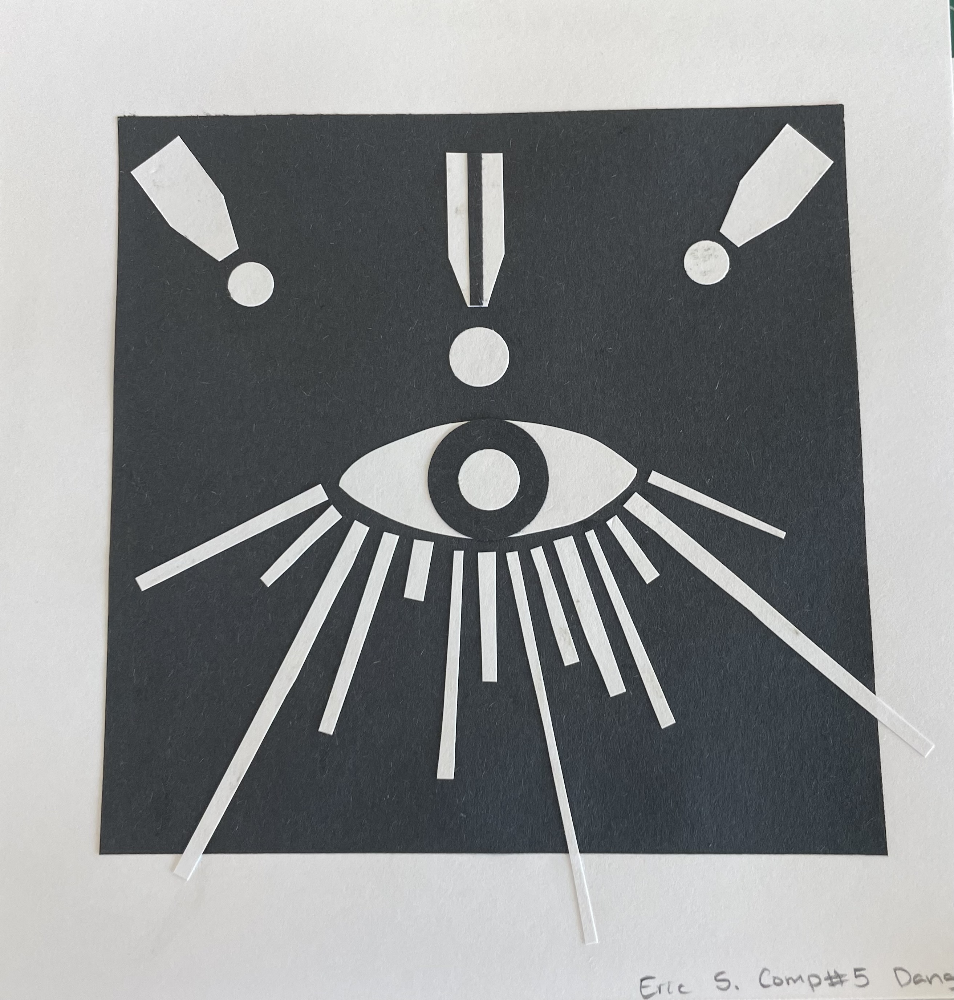
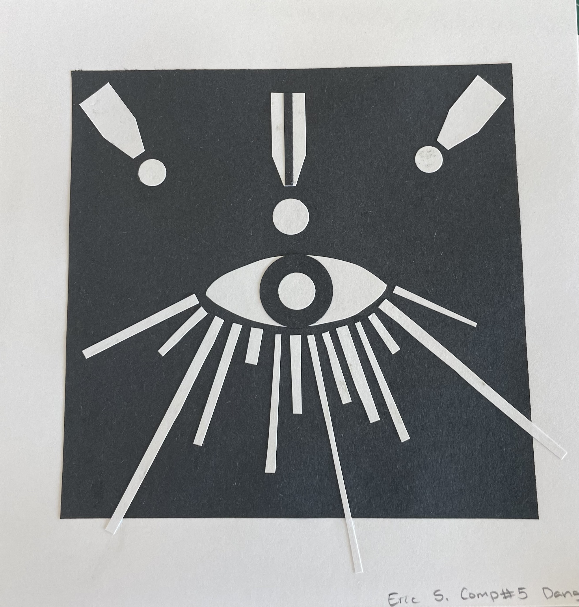
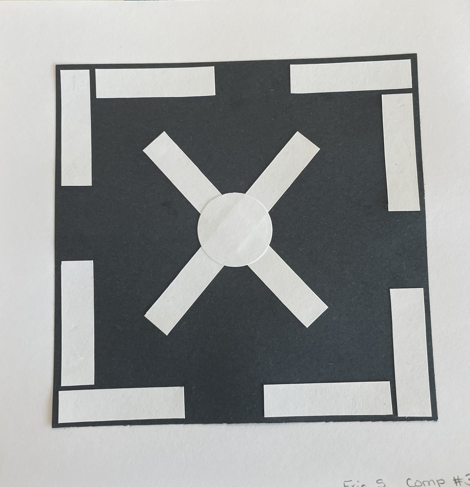
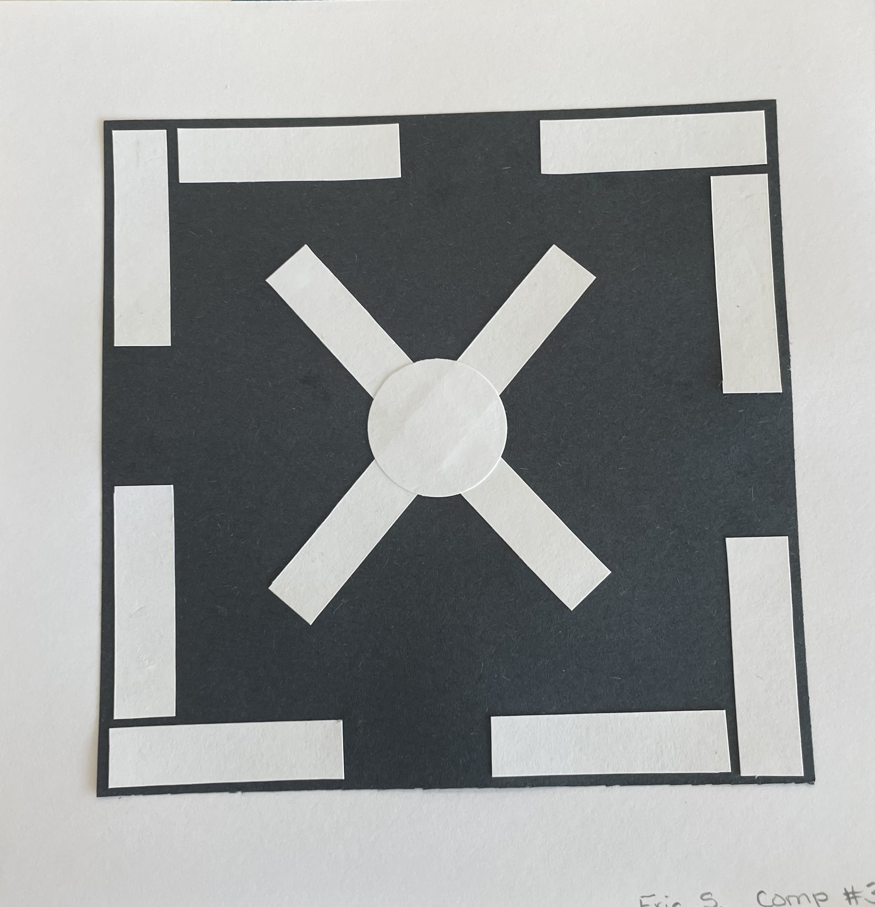

Traditional Media Portfolio
Lap and Dowel
For a project in a sculpture course at Colby, I wanted to make something both useful and creative: a new twist on a wooden table. I aimed for a minimalist design and a structure that would defy gravity. The table rests on the sill of a window, turning an outdoor space into a functional surface. To achieve the simplicity, I used a carpenter’s joinery techniques like lapped and dowel joints. The dowel joint makes the leg detachable, making the table portable and easily stored.


Black and White
This is a sampling of pieces I created in white and black cardstock for a class in 2D art.
 



 
